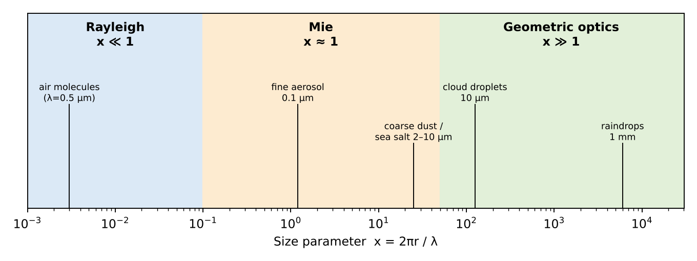
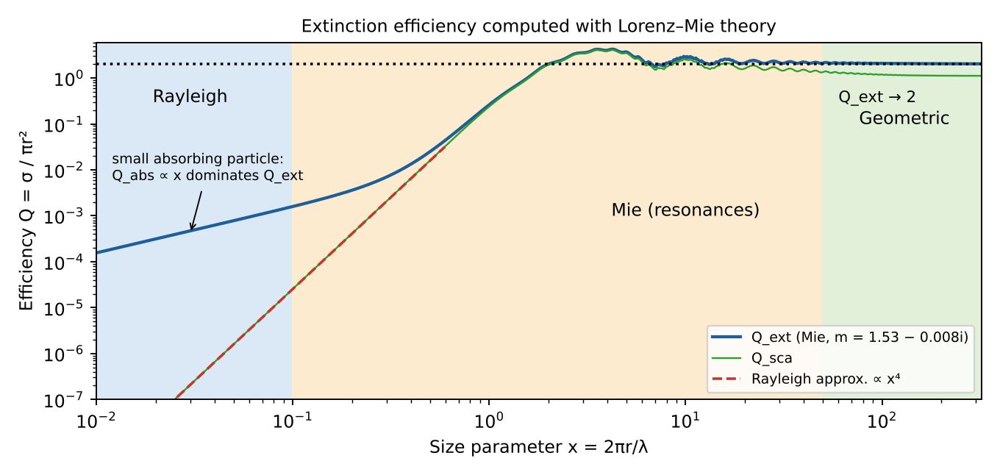

Trang chủ › M7 · Các chế độ tán xạ
- What are the different regimes of scattering of light by particles?
- Explain each of them and under which conditions they are encountered.
- What is the regime for coarse aerosols scattering visible light?
Hạt to hay nhỏ so với bước sóng?
Cách ánh sáng tán xạ phụ thuộc vào kích thước hạt so với bước sóng. Phân tử khí nhỏ hơn bước sóng rất nhiều; hạt aerosol cỡ bước sóng; giọt mưa lớn hơn bước sóng cả nghìn lần. Hai con số quyết định chế độ: tham số kích thước và chiết suất phức m = n + ik.

| Chế độ | Điều kiện | Gặp ở | Đặc điểm |
|---|---|---|---|
| Rayleigh | x ≪ 1 (thường < 0,1) | Phân tử N₂, O₂ (UV–IR); hạt rất mịn r < 0,03 µm trong khả kiến; giọt mây với vi sóng/radar | σ ∝ r⁶/λ⁴; P(Θ) = ¾(1 + cos²Θ) |
| Mie (cộng hưởng) | x ≈ 0,1–50 | Aerosol mode tích tụ (0,1–1 µm) trong khả kiến; giọt mây trong IR; cả aerosol thô | Lorenz–Mie; Q_ext dao động rồi → 2; α ≈ 0–2; đỉnh tới trước (g ≈ 0,6–0,8) |
| Quang hình học | x ≫ 1 (thường > 50–100) | Giọt mưa, giọt mây lớn, tinh thể băng, bụi lớn trong khả kiến | Tia: phản xạ, khúc xạ, nhiễu xạ; Q_ext → 2; không phụ thuộc λ |
Rayleigh: phân tử và hạt rất mịn
Hạt nhỏ hơn bước sóng rất nhiều hoạt động như một lưỡng cực dao động trong trường đều.
- Phụ thuộc mạnh λ⁻⁴ → bầu trời xanh, hoàng hôn đỏ.
- Tán xạ tới trước và ra sau đối xứng; ánh sáng tán xạ 90° phân cực hoàn toàn.
- Gấp đôi bán kính (giữ λ): σ tăng 2⁶ = 64 lần.
- Giảm một nửa bước sóng: σ tăng 2⁴ = 16 lần.
- 450 nm so với 650 nm: (650/450)⁴ = 4,35 lần.
Mie và quang hình học
Mie (x ≈ 0,1–50) là nghiệm chính xác phương trình Maxwell cho một cầu đồng nhất, dưới dạng chuỗi đa cực vô hạn. Hiệu suất suy giảm Qext = σext/(πr²) dao động theo x và tiến về 2 khi x lớn (“nghịch lý suy giảm”). Phụ thuộc bước sóng yếu nên khói mù và mây có màu trắng/xám; đỉnh tới trước mạnh (g ≈ 0,6–0,8), cấu trúc góc phức tạp (glory, cầu vồng). Hạt không cầu (bụi, băng) cần T-matrix hoặc lưỡng cực rời rạc.
| x | 0,1 | 0,5 | 1 | 2 | 5 | 10 | 50 | 200 |
|---|---|---|---|---|---|---|---|---|
| Qext | 1,11e-05 | 0,00677 | 0,0939 | 0,713 | 3,59 | 2,21 | 1,98 | 2,06 |
Kiểm: ở x = 0,05 kết quả khớp công thức Rayleigh trong 2%; ở x = 200 giá trị ≈ 2,06 (≈ 2).

Quang hình học (x ≫ 1): coi ánh sáng là tia (Snell, Fresnel) cộng nhiễu xạ. Qext → 2 (một nửa nhiễu xạ, một nửa phản xạ/khúc xạ), độc lập bước sóng nên mây màu trắng; hiện tượng: cầu vồng 42°, quầng 22° quanh tinh thể băng lục giác; đỉnh nhiễu xạ tới trước rất mạnh.
Aerosol thô trong ánh sáng khả kiến
Bụi khoáng và muối biển có r ≈ 1–10 µm; ở λ ≈ 0,55 µm:
→ phần trên của chế độ Mie, tiến gần quang hình học (Mie vẫn đúng; quang hình học là xấp xỉ tốt cho hạt lớn nhất). Hệ quả: AOD gần như không phụ thuộc bước sóng (α ≈ 0–0,5), tán xạ tới trước mạnh, Qext ≈ 2. Bụi không cầu nên Mie cho cầu chỉ là xấp xỉ.
| Hạt | r | x ở 0,55 µm | Chế độ |
|---|---|---|---|
| Phân tử N₂ | 0,2 nm | 0,0023 | Rayleigh |
| Sulfate | 0,2 µm | 2,28 | Mie |
| Bụi | 5 µm | 57,1 | Mie trên / gần quang hình |
Exam checklist — phải nêu được
- Size parameter x = 2πr/λ (+ refractive index m).
- Rayleigh x ≪ 1 (molecules), λ⁻⁴, symmetric P(Θ).
- Mie x ~ 1 (fine aerosols), Lorenz–Mie theory, forward peak, Q_ext oscillates → 2.
- Geometric optics x ≫ 1 (raindrops, ice), wavelength-independent.
- Coarse aerosol in visible: x ~ 10–100 → Mie (large-particle limit, near geometric optics), α ≈ 0.
- Chế độ tán xạ phụ thuộc thông số kích thước x = 2πr/λ.
- Rayleigh (x ≪ 1): phân tử khí, ∝ λ⁻⁴, trời xanh. Mie (x ≈ 1): aerosol mịn, tán xạ mạnh về phía trước. Quang hình (x ≫ 1): giọt mưa, tinh thể băng, không phụ thuộc bước sóng.
- Aerosol thô (bụi, muối biển, r ≈ 1–10 µm) với ánh sáng khả kiến: x ≈ 10–100 → chế độ Mie (phần trên, tiến gần quang hình), số mũ Ångström ≈ 0.
Thực hành tính toán
Các công cụ dưới đây chạy ngay trong trình duyệt, đã đối chiếu với Python:
Tham số kích thước và chế độ tán xạ